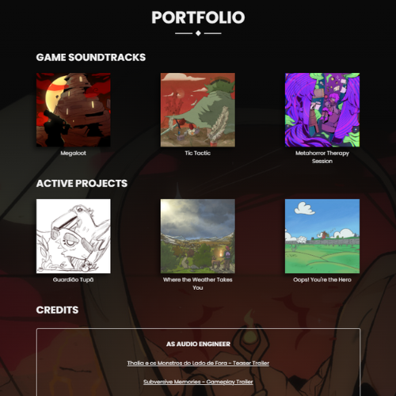
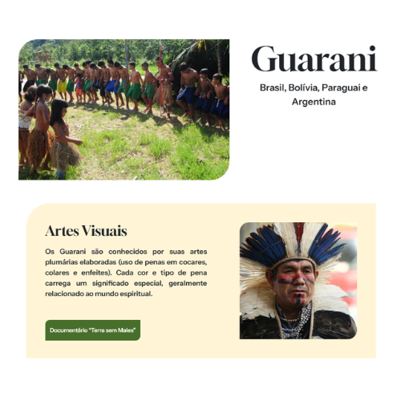
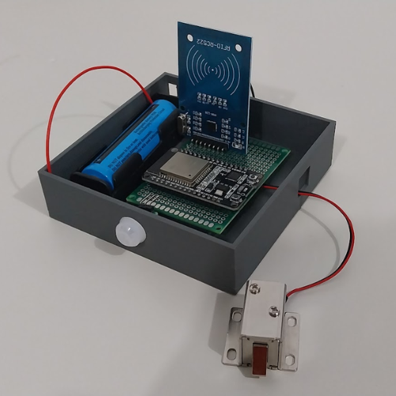

PÁGINA DE PORTFOLIO
Feita juntamente com dois colegas, esta é uma página web de exposição do trabalho do compositor de trilhas sonoras de videogame Guilherme Alexander.
Acessar
PÁGINA DE PROJETO DA SNCT
Em uma equipe de desenvolvimento no Ensino Médio, foi desenvolvido este site para complementar e divulgar o projeto sobre os indígenas "As Vozes Não Silenciadas da Terra", da Semana de Ciência e Tecnologia de 2024 no IFES Campus de Alegre.
Acessar


DOMÓTICA ASSISTIVA
Em 2024, Pedro participou de um projeto de extensão no IFES Campus de Alegre, onde desenvolveu com microcontroladores uma trava automática para bloquear o acesso de portas de áreas perigosas à crianças e idosos.